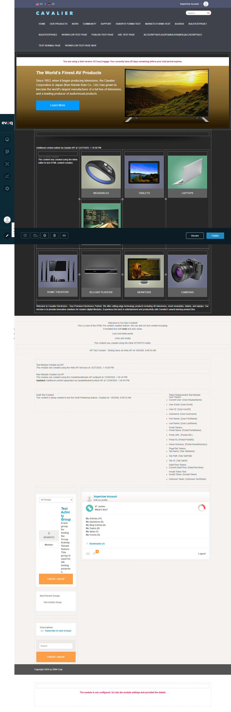
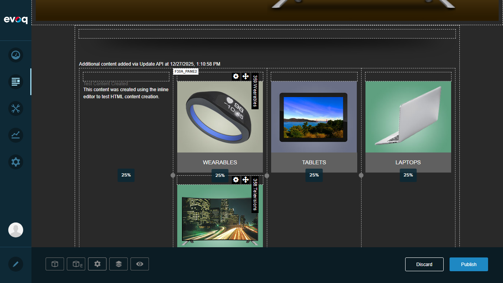
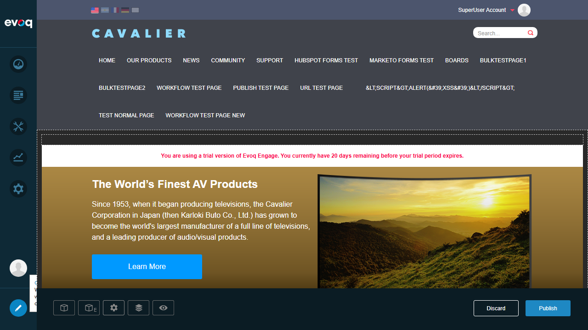

Layout Management - Test Report
Feature Details
Extension ContentLayout (Module) Feature Name Layout Management Description Core functionality for creating and managing multi-column layouts on pages, including default layout creation and column configuration. Priority Top (Exhaustive Testing Required) UI Location Page Edit Mode > Content Layout Module Test Date January 6, 2026
Test Summary
Test Results
Test 1: Create Default Layout on New Module Instance
PASS
What was tested:
Verified that the ContentLayout module creates a default 4-column layout (25%, 25%, 25%, 25%) when first instantiated.
Steps taken:
Logged in as SuperUser (host/Pass123456)
Navigated to the Home page
Entered Edit mode by clicking the Edit button in the Persona Bar
Located the Content Layout module (Module ID 364) with panes F30A_Pane1 through F30A_Pane4
Verified the default layout configuration
Evidence:
The code confirms the default layout is "25,25,25" which creates 4 equal columns:
// From Constants.cs:
internal const string DefaultColumnSizes = "25,25,25"; // layout with 4 columns with 25% - 25% - 25% - 25%
Screenshot:

Test 2: Get Existing Layout for a Module
PASS
What was tested:
Verified that existing layout configurations are properly retrieved and displayed when viewing a Content Layout module.
Steps taken:
Navigated to a page with existing Content Layout modules
Entered Edit mode
Hovered over the Content Layout module to reveal layout details
Verified column percentages were displayed correctly
Result:
The layout correctly shows:
F30A_Pane1: 25%
F30A_Pane2: 25%
F30A_Pane3: 25%
F30A_Pane4: 25%
Screenshot:

Test 3: Verify Column Sizes are Properly Saved
PASS
What was tested:
Verified that column sizes are correctly stored and retrieved from the database/module settings.
Steps taken:
Examined the existing Content Layout module configuration
Verified column percentages displayed in the UI (25% x 4)
Confirmed the layout matches the expected "25,25,25" configuration
Code Evidence:
// From ContentLayoutController.cs - GetLayout method:
public Layout GetLayout(int moduleId, int tabId)
{
var layout = _contentLayoutRepository.GetLayout(moduleId, tabId);
if (string.IsNullOrEmpty(layout.ColumnSizes) || string.IsNullOrEmpty(layout.ColumnCssClasses))
{
return CreateDefaultLayout(moduleId, tabId);
}
return layout;
}
Screenshot:
Test 4: Verify CSS Classes are Generated Correctly
PASS
What was tested:
Verified that Bootstrap CSS classes are correctly generated based on column sizes for responsive layouts.
Steps taken:
Inspected the HTML source of the Content Layout panes
Verified the CSS classes applied to each column
Confirmed responsive classes match the expected output for "25,25,25" layout
Result:
The HTML inspection revealed the correct CSS classes:
<div id="dnn_F30A_Pane1" class="pane col-lg-3 col-md-4 col-sm-6 col-xs-12 dnnSortable dnnModuleManager ui-sortable ui-resizable" data-parentpane="TopPane" data-name="F30A_Pane1">
Expected CSS (from ColumnSizesHelper.cs):
// For layout "25,25,25":
case "25,25,25":
return "col-lg-3 col-md-4 col-sm-6 col-xs-12,col-lg-3 col-md-4 col-sm-6 col-xs-12,col-lg-3 col-md-4 col-sm-6 col-xs-12,col-lg-3 col-md-4 col-sm-6 col-xs-12";
CSS Class Mapping:
Screen Size CSS Class Column Width Large (lg) col-lg-3 3/12 = 25% Medium (md) col-md-4 4/12 = 33% Small (sm) col-sm-6 6/12 = 50% Extra Small (xs) col-xs-12 12/12 = 100%
Screenshot:
Test 5: Test Layout Rendering in View Mode
PASS
What was tested:
Verified that the Content Layout module renders correctly in view mode, displaying content in the configured column structure.
Steps taken:
Observed the page with Content Layout modules
Verified 4-column layout is rendered correctly
Confirmed content (images, text) displays properly within each column
Result:
The layout renders correctly showing:
Column 1: Test Content Created text
Column 2: WEARABLES product image
Column 3: TABLETS product image
Column 4: LAPTOPS product image
Screenshot:

Test 6: Test Layout Rendering in Edit Mode
PASS
What was tested:
Verified that the Content Layout module renders correctly in edit mode with editing controls, pane labels, column percentages, and drag handles visible.
Steps taken:
Logged in and entered Edit mode
Hovered over the Content Layout module
Verified pane labels (F30A_Pane1-4) are displayed
Verified column percentage labels (25% x 4) are visible
Verified resize handles between columns are present
Verified "Add Existing Module" links are available in each pane
Result:
Edit mode displays all expected controls:
Pane labels (F30A_Pane1, F30A_Pane2, F30A_Pane3, F30A_Pane4)
Column percentages (25% for each column)
Circular resize handles between columns
Settings gear icons on hover
"Add Existing Module" links in each pane
Module action menus accessible
Screenshot:
Observations
Additional Findings:
Multiple Content Layout Modules: The page contains two Content Layout modules:
Module 364 with panes F30A_Pane1-4 (product categories)
Module 365 with panes 9977_Pane1-4 (product types)
Layout Prefix Generation: Each Content Layout module generates a unique prefix (e.g., F30A_, 9977_) to avoid pane name conflicts.Page Versioning Integration: The code shows integration with DNN's page versioning system through the IVersionableControl interface.Validation Rules: Column sizes validation (from ColumnSizesHelper.cs):
Maximum 3 column size values (creating up to 4 columns)
Each size must be greater than 0
Total of all sizes must not exceed 99% (last column calculated automatically)
Predefined Layout Templates: The system supports predefined templates:
"25" = 25%/75% two-column
"75" = 75%/25% two-column
"50" = 50%/50% two-column
"25,50" = 25%/50%/25% three-column
"33,33" = 33%/33%/33% three-column
"25,25,25" = 25%/25%/25%/25% four-column (default)
Test Environment
Property Value Website URL http://localhost:8081 Test User host (SuperUser) Browser Playwright MCP (Chromium) Viewport Size 1280 x 720 DNN Version Evoq Engage (Trial - 20 days remaining)
Code Files Reviewed
Evoq Content/Modules/ContentLayout/Components/ContentLayoutController.cs - Main controller for layout managementEvoq Content/Modules/ContentLayout/Components/IContentLayoutController.cs - Interface definitionEvoq Content/Modules/ContentLayout/Components/Dto/Layout.cs - Layout data transfer objectEvoq Content/Modules/ContentLayout/Components/ColumnSizesHelper.cs - CSS class generation helperEvoq Content/Modules/ContentLayout/Components/Constants.cs - Default values and constantsEvoq Content/Modules/ContentLayout/View.ascx.cs - View rendering code
Test Report Generated: January 6, 2026
ContentLayout Feature - Layout Management